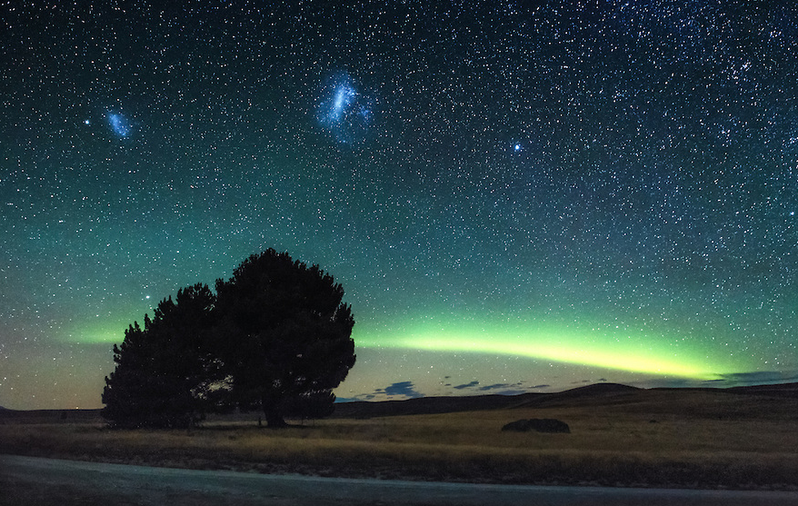

La noche guarda secretos

Autor: Mark Gee
Año de publicación: 2015
Comentario del autor:
Acabábamos de terminar el taller de astrofotografía Dark Skies of
Wonder en el lago Tekapo recientemente, cuando de repente este impresionante arco de luz se formó bajo el horizonte hacia el sur. Fue la
Aurora Australis haciendo una aparición, pero algo único, ya que la formación de arco no se veía tanto en el hemisferio sur.
Crítica:
Impresionante foto. Sin duda te dan ganas de quedarte sentado junto a ese árbol
y pensar detenidamente en todo mientras observas tal hermoso cielo. Increíble que haya personas que nos muestren estas imagenes.